BUET Postgraduate Fellowship
Awarded for academic excellence during my M.Sc. at BUET.
Computer vision · Transportation
M.Sc. in Civil Engineering (Transportation), BUETDhaka, Bangladesh
I work at the intersection of transportation engineering and computer vision, turning road video into data for traffic measurement and prediction. My work combines custom YOLO models, multi-object tracking, camera calibration, and trajectory modelling for heterogeneous traffic.
Seeking a PhD in computer science and transportation. Get in touch.
Awarded for academic excellence during my M.Sc. at BUET.
Bangladesh University of Engineering and Technology
Bangladesh University of Engineering and Technology
Alongside Civil Engineering, I took graduate courses in BUET’s Computer Science and Engineering (CSE) and Electrical and Electronic Engineering (EEE) departments, extending my transportation background into deep learning, neural networks, language processing, and data analytics.
Research focus: Traffic-video processing, pedestrian group context, crossing-intention modelling, and trajectory forecasting.
8th International Conference on Civil Engineering for Sustainable Development (ICCESD 2026).
7th International Conference on Civil Engineering for Sustainable Development (ICCESD 2024).
Submitted to the International Conference on Civil Engineering (ICCE 2026).
Submitted to the International Conference on Civil Engineering (ICCE 2026).
Submitted to the International Conference on Civil Engineering (ICCE 2026).
Review status as of September 2026.
Vehicle trajectories estimated from fixed CCTV footage in Dhaka for traffic-state analysis.
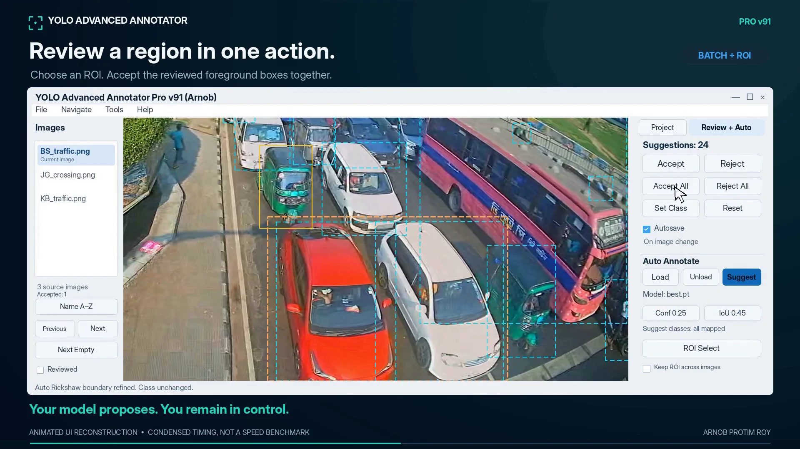
I built a desktop tool for human review of YOLO-proposed vehicle and pedestrian boxes, with class filtering, region inspection, and label correction.
Python · PyQt5 · OpenCV · YOLO
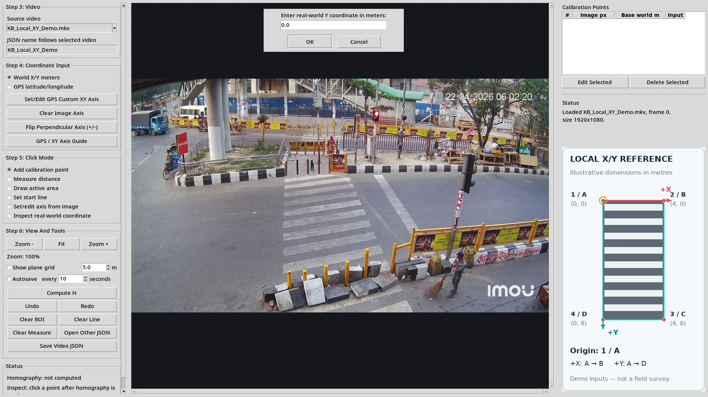
I developed an interactive camera-calibration tool using GPS or local references, with projected grids and active-area inspection.
Assumes a locally planar road surface.
Python · OpenCV · Tkinter · Geometry
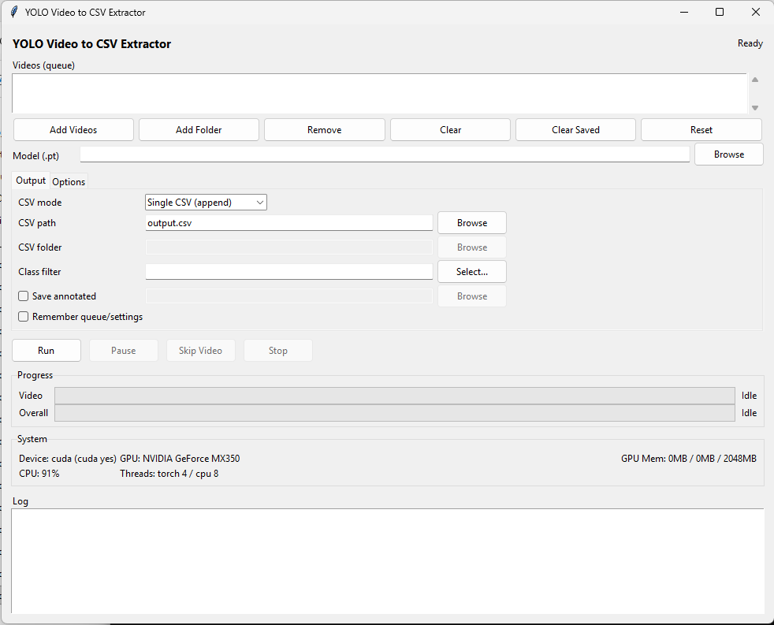
I built a desktop workflow for queued traffic videos, custom YOLO models, and optional ByteTrack tracking.
Python · Ultralytics YOLO · ByteTrack · Tkinter

A YOLOv8 detection and tracking demonstration on road footage, with bounding boxes, class labels, and confidence scores.
Related work: A separate Bangladeshi vehicle-counting repository covers YOLOv8/YOLO11 training and video processing for CNG auto-rickshaws and cycle rickshaws.
YOLOv8 · Vehicle tracking · Line-crossing counts

Localizes vehicle plates in video frames and extracts plate text with recognition confidence scores.
YOLOv8 · PaddleOCR · Python
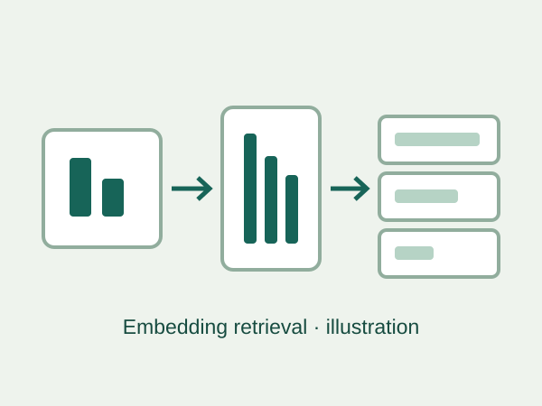
Explored face detection, embedding comparison, and local SQLite retrieval in a prototype.
Exploratory prototype; embedding similarity does not establish a person’s identity.
Python · YOLOv12 · OpenCV · face_recognition · SQLite
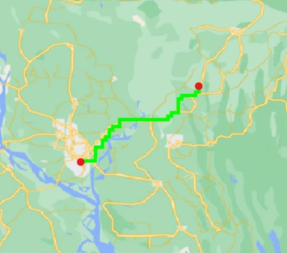
A programming experiment using Google Maps / Snazzy Maps imagery for colour-based road extraction, a grid representation, and heuristic graph search with route visualization.
Python · Pygame · Heuristic search
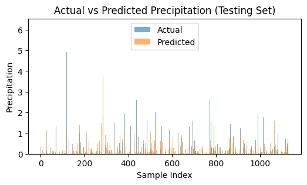
Weather modelling with Bangladeshi data and separate AusWeather experiments; additional notebooks explore digit recognition, expense classification, and vehicle counting.
Python · pandas · NumPy · scikit-learn · Jupyter

Evolves neural controllers across generations to navigate pipes, as an experiment in neuroevolution and game-playing agents.
Python · Pygame · NEAT

A cellular automaton illustrating how complex patterns emerge from simple survival, isolation, overcrowding, and reproduction rules.
Python · Pygame · Cellular automata
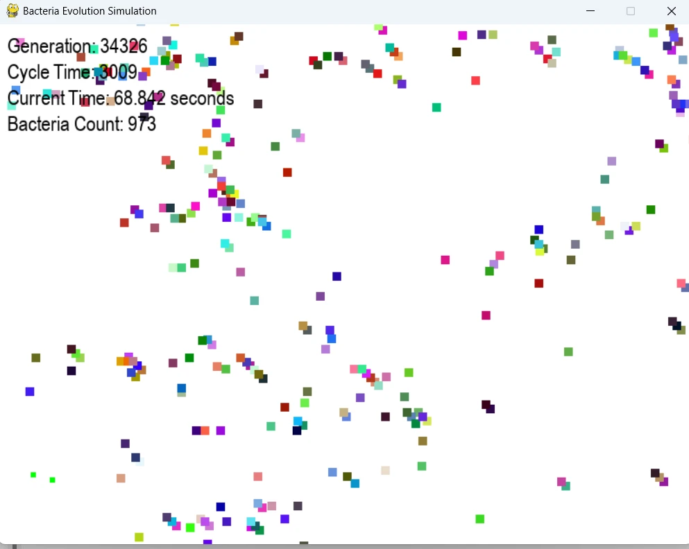
Models food-seeking, random mutations, reproduction, and competition in a 2D environment to explore evolving population behavior.
Python · Pygame · Simulation

Tools for creating, managing, and taking quizzes. Includes a Laravel 11 demo and an earlier PHP/MySQL implementation.
Laravel · PHP · MySQL · Bootstrap

Extracts and organizes website data, including admission-result searches by name or roll-number range.
Python · Data collection · Web scraping
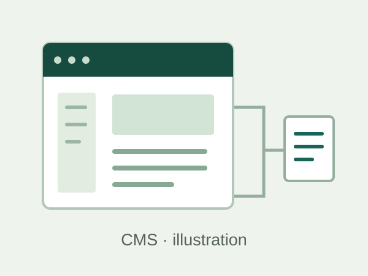
An open-source content management system for creating and administering websites. An early project developed in raw PHP with MySQL, CSS, JavaScript, and Bootstrap.
PHP · MySQL · Web development
Other practical tools: English/Bangla screenshot OCR with crop selection and clipboard output; and a vision-controlled Chrome Dino player.
Earlier learning prototypes: a weather lookup using the Weatherbit API, a keyboard-controlled p5.js sketch, a paginated blog-feed reader, and webcam hand-sign recognition experiments with YOLOv8.
Analyzed a seven-day classified video survey on the Dhaka–Chattogram N1 corridor: average daily traffic, peak-hour metrics, passenger-car-unit conversion, and safety conflicts to support traffic impact assessment and geometric design.
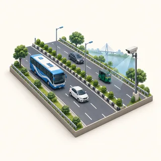
Applied PTV VISSIM to residential-scale traffic assessment for a two-storey (G+1) building, supporting the RAJUK approval process.
Evaluated trip generation, capacity, future scenarios, and mitigation measures for a 10-storey multipurpose building using Highway Capacity Manual (HCM) methods and PTV VISSIM, supporting DTCA review.
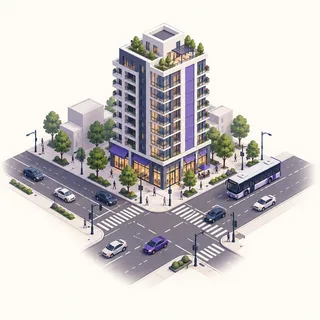
Worked in a six-member team on sustainable redevelopment: structural and traffic analyses, cost estimation, scheduling, and resource allocation.
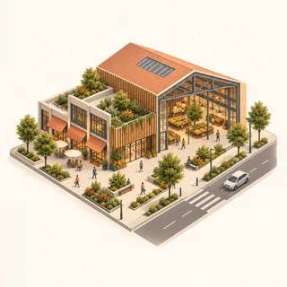
I began programming in 2013 with PHP and have worked with PHP, C/C++, and Python since my school years. Early projects included Borno CMS, an open-source content management system built with PHP and MySQL. Today, I apply that programming background to computer vision, machine learning, and transportation research.
Coordinator, 2021
Coordinated program logistics, seminars, training camps, and question preparation. Delivered a lecture on sustainable transport during the national winners’ training camp.
Volunteer, 2019–2020
Supported astronomy programs, seminars, and workshops; contributed to Bangla translations of IAU astronomy booklets, including Big Ideas in Astronomy (Jotibiddar moddakotha). Led the three-day 12th Abdul Jabbar Astronomy Workshop at BUET with IAU and the National Astronomical Research Institute of Thailand (NARIT).
Bangladesh National Committee coordinator, 2019–2020
Coordinated national participation in the IAU100 initiative: logistics, academic support, and student engagement. Bangladesh’s selected names were “Tondra” for exoplanet HD 148427b and “Timir” for its host star.
Volunteer, 2019–2021
Volunteered in astronomy outreach and science education under the guidance of Dr. Farseem Mannan Mohammedy.
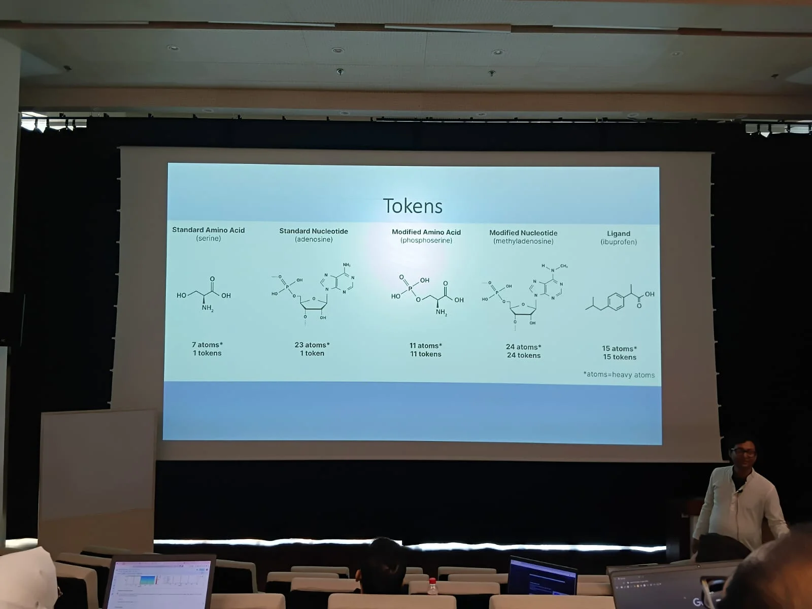
3 photosWorkshop at BRAC University, 8 January 2026.
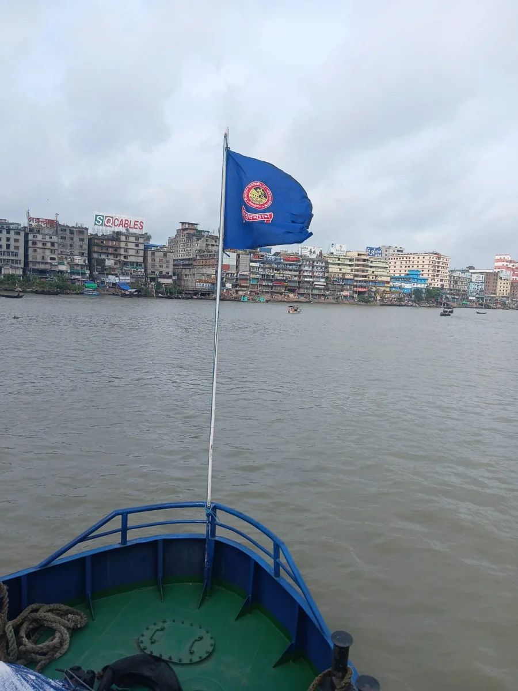
3 photos2026 field visit with inland-waterway and transport authorities (BIWTA, BIWTC, DTCA) and BUET.
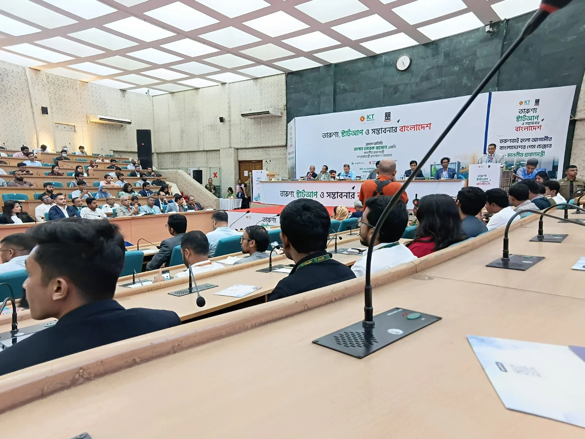
3 photosICT Ministry’s “Tarunner Startup and Sombvobonar Bangladesh” program, 2026.
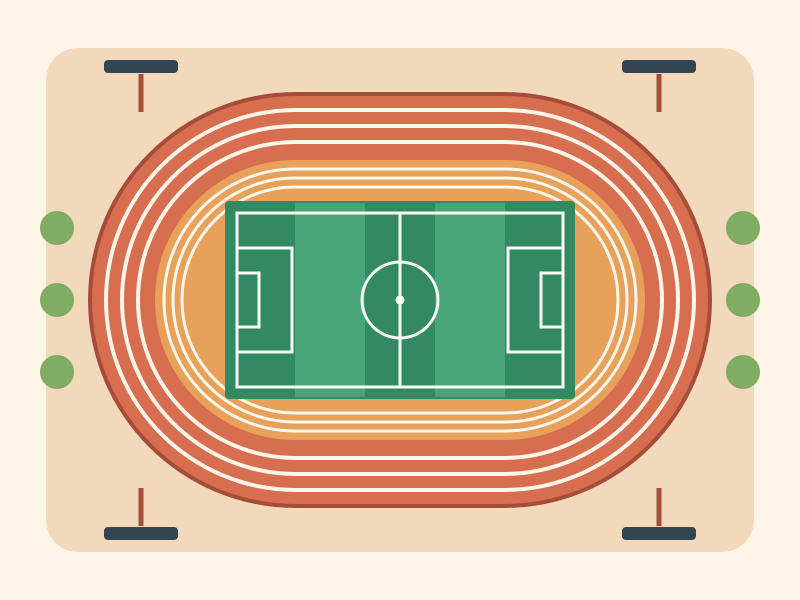
Field inspection with my M.Sc. supervisor.
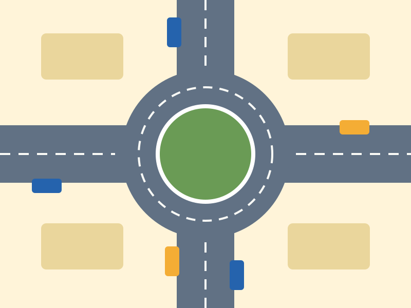
Assisted a preliminary roundabout-design inspection at a police officers’ housing society.
A one-day BUET field visit during Level 4, Term 2.
Construction-site visit during BUET Level 4, Term 2.
I welcome PhD opportunities and research collaborations at the intersection of transportation, computer vision, and machine learning.
Press Ctrl+C (Windows) or ⌘C (Mac). On a phone, touch and hold the address, then choose Copy.